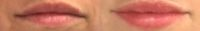
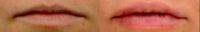

Pacific Plastic Surgery Group – San Francisco in San Francisco, California
Name: Pacific Plastic Surgery Group – San Francisco
Display name: Pacific Plastic Surgery Group – San Francisco
Website: https://www.pacificplasticsurgerygroup.com/
Office hours: Mon: 9:00am – 5:00pm
Tue: 9:00am – 5:00pm
Wed: 9:00am – 5:00pm
Thu: 9:00am – 5:00pm
Fri: 9:00am – 5:00pm
Phone: (415) 379-9015
Address: 77 Van Ness Ave., Ste. 302, San Francisco, California, USA, 94102
City: San Francisco
State: California
Country code: US
Postal code: 94102
Phone: +14153799015
Neighborhood: Civic Center
Country: USA
GPS coordinates on map: 37.7760628,-122.4198501
RealSelf Info
Profile created: Oct 26, 2016
Profile modified: Apr 27, 2023
RealSelf’s PRO: No
Doctors
Edward P. Miranda, MD, FACS
Statement: Dr. Edward Miranda, MD, FACS is a board-certified plastic surgeon with 14 years of experience. The medical director of Pacific Plastic Surgery Group in San Francisco, California, he provides a range of aesthetic surgery procedures including body contouring, breast augmentation, and hair restoration.
Dr. Miranda is committed to creating a positive experience for each patient while sharing his philosophy that natural, subtle changes reveal true beauty.
Dr. Miranda received his medical degree from Cornell University Medical College in New York City. He went on to complete his post-graduate training in plastic surgery at the University of California San Francisco. Dr. Miranda was later awarded a research fellowship to study breast and brain cancer at Memorial Sloan Kettering Cancer Center in New York.
Selected as both a RealSelf Most Loved Injector and Top Doctor, Dr. Miranda is a fellow of the American College of Surgeons and an active member of the American Society of Plastic Surgeons and the American Society for Aesthetic Plastic Surgery.
Began aesthetic medicine in: 2007
Rating: 4.7
Staff
Name: Alex Friedman
Position: Physician Assistant
Can answer: 1
Years experience: 4
Biography: Alex Friedman, PA-C joined Pacific Plastic Surgery Group after receiving his Master’s degree of Physician Assistant from Samuel Merritt University. Prior to that, Alex grew up in the Bay Area and received his Bachelors of Science degree from University of California Davis. Alex is an integral part of the plastic and reconstructive practice, but has fostered an interest in aesthetics. He has had the opportunity to receive the most proficient and reliable training in emerging techniques of administrating injectable products and laser therapies to achieve outstanding results. He is always happy to answer any concerns or questions you may have and is known for his priority to create an positive, customized experience for each patient. Alex currently lives in San Francisco and enjoys playing competitive lacrosse, cooking, and spending time with his family.
Name: Beata Jaron
Position: Physician Assistant
Can answer: 1
Years experience: 2
Biography: Beata Jaron, PA-C joined Pacific Plastic Surgery Group in 2015. Beata earned her Bachelor of Science in Nutrition Science at University of California Davis and earned her Masters in Physician Assistant studies at University of California Davis. At PPSG, Beata provides excellent pre and post-operative care, assists with both cosmetic and reconstructive surgeries, and performs both outpatient and inpatient minor procedures. In addition to providing expertise in laser and scar therapy, CoolSculpting, and neurotoxins, Beata is passionate about providing individualized care and helping patients feel and look their best.
Name: Alyson Mititieri
Position: Aesthetician
Years experience: 10
Biography: With a career spanning over a decade in the beauty industry, Alyson brings a multitude of skills and unmatched knowledge to her role as a Licensed Aesthetician. Having worked for a variety of skincare brands, Alyson has earned experience in product formulation, research & development, and sales, all of which are hallmarked by her outstanding customer service and her naturally therapeutic touch. She graduated top of her class from the prestigious Euro Institute of Skin Care in Seattle, Washington. Alyson continuously seeks advanced training to ensure that only the best and most effective treatments are being performed. Here at Pacific Plastic Surgery Group, Alyson focuses on providing advanced skin therapies to optimize the skin’s natural functions with a balanced approach of holistic and medical treatments.
Practice’s answers
Question
Answer Header & Date
Answer Snippet
Am I candidate for CoolSculpting?
Coolscuplting vs liposuction vs tummy tuck
May 4, 2018
Based on your pictures and description, you are not likely to see optimal results with CoolSculpting (you will see some) and would probably most benefit from liposuction. Tummy tuck, in our opinion, would a second option to reduce your abdominal fat although you would get a scar. Alternatively, you can do a combination of any of the above modalities. Ex: CoolSculpt the flanks/lipo abdomen; lipo flanks/tummy tuck abdomen, etc. We recommend a consultation with a board certified…
I just got a lip lift and it came out terrible I did not want a Cupid’s bows can Botox reduce this?
Can botox correct lip fillers
May 4, 2018
It is difficult to assess your needs without a picture and an inperson assessment would be ideal, but generally neuromodulators are not used to correct areas that have had HA filler. Neurotoxin can be used in the upper lip to reduce “gum showing” by paralyzing the orbicularis oris but this likely is not what you need/want based on your description. We recommend returning to your provider to discuss options or consult a board certified plastic surgeon.
What is the cause of pus 3 days post nose filler and what does this mean?
Bacterial infection after nose filler
May 4, 2018
Thank you for the pictures and we’re sorry to see/hear your unfortunate experience. It appears that you have an bacterial infection over nose, which likely is from bacteria entering the skin from the needle injection sites. We recommend you report these symptoms to your injection and begin a course of antibiotics at the discretion of your provider. This this person cannot prescribe medication then follow up with primary physician or if symptoms worsen urgent care/ER.
I have a broad nose. How can I make it thin?
Broad nose correction
May 1, 2018
The most noninvasive way to correct this issue would be with HA filler, which can be placed at various strategic spots in the nose to reduce the broad appearance. Placement over the bridge can provide height to a broad nasal bridge. Likewise, filler can be carried down along the nose to reduce humps, asymmetry, and bulbous nasal tips. Alternatively, a rhinoplasty with or without nasal implant is an option. We recommend a consultation with a board certified plastic surgeon…
I had filler put into my lips 8 days ago. Is this unevenness permanent?
HA filler expecations
May 1, 2018
It is not uncommon for there to be swelling in the lips after injections for various reasons-inflammation from needle injections, volume increase with HA filler, fluid drawn in from HA filler, bleeding, etc. This can lead to asymmetry in the lips, which obviously is concerning. However, this will generally resolve with time over the next 1-3 weeks. We recommend waiting a little more time before returning to your provider to address any asymmetry that may need correction.
Latest Before And After Photos
-

-
28 Year Old Wife Treated With Lip Augmentation By Doctor Pacific Plastic Surgery Group – San Francisco
-

-
28 Year Old Female Treated With Lip Augmentation Results By Dr. Pacific Plastic Surgery Group – San Francisco
Last updated on 12/03/2023